Práctica 3: Señales en tiempo discreto
Integrantes del equipo: Ortega González Moisés Donaldo,Ortiz Colin Cesar Antonio, Zarate Murillo Jose Antonio
Contents
Introducción
ESCALONAMIENTO HORIZONTAL DE SEÑALES EN TIEMPO DISCRETO.
* Compresión horizontal de una señal en tiempo discreto
Al comprimir una señal x[n]con un factor b (el cuál se limita a numeros enteros) y 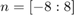 tenemos que para todos lo valores de n x[bn]=...,x[-2b],x[-b],x[0],x[b],x[2b],... entonces la nueva función solo considera entradas que sean múltiplos de b.Esta operación reduce el número de alturas de la función original con un factor b, es por esto que se le llama "submustreo" de la señal.
* Expansión horizontal de una señal en tiempo discreto.
Al expandir una señal x[n] con un factor 1/l donde l se limita a numeros enteros, y si 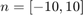 tenemos que para todos los valores de n 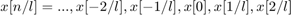,... si suponemos un l=2, encontramos que tendremos números enteros en la entrada de la señal para 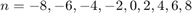, y por tratarse de una señal en tiempo discreto decimos que para el resto de valores de n no hay una altura definida.
* Interpolación.
Una vez que tenemos una expansión de una señal en tiempo discreto, gráficamente podemos notar todos los "huecos" de alturas en los valores impares de n, para evitar este fenómeno, se hace la interpolación, que consiste en "rellenar" dichos huecos asignandoles alturas haciendo el promedio del primer valor que se encuentra a su derecha e izquierda. De forma que si la señal original tiene un número n de alturas, la señal interpolada tendrá l*n, por esto, la operación de interpolación también se conoce como sobremuestreo. nota: cabe señalar que al expandir horizontalmente una función con el comando stem, Matlab realiza automáticamente la interpolación.
intro
A continuacion se muestran unos ejemplos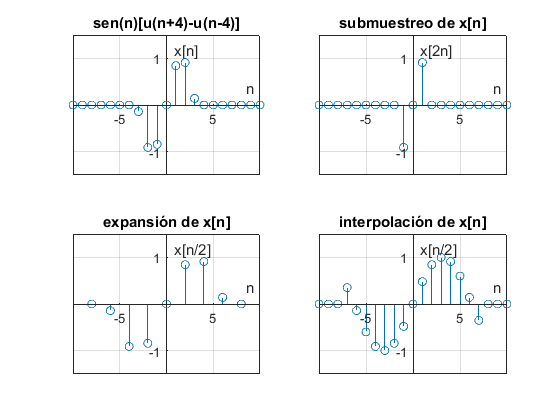
Desarrollo
* Problema 1
Para La solucion al problema 1 basto con elaborar el siguiente codigo
function r=fun1(r,o,n) %n es un vector el cual debe introducirse por ejemplo de la siguiente manera n=1:10 y=(r.^n.*cos(n.*o)+(r.^n.*sin(n.*o)*j)); r=real(y)+imag(y)*j; end end
Para fines de mostrar los resultados de fun1 de una forma estetica y ordenada se puede ejecutar el siguiente codigo que en esencia es fun1
function fun1d(r,o,n1,n2 )%o hace referencia a omega %el vector n debe introducirse como un valor inicial(n1) y un valor final n2 fprintf('%6s %12s %15s\n','n','real y[n]','imaginario y[n]') %el vector n(numero de evaluaciones) se conforma con los valores introducidos y va de 1 en 1 for n=n1:n2;%es para que recorra del valor inicial y valor final y=(r.^n.*cos(n.*o)+(r.^n.*sin(n.*o)*j)); fprintf('%6.2d %12.5f %15.5f\n',n,real(y),imag(y)) end end
* Problema 2
A continuacion la solucion del problema 2
n=-2:10;% vector especificado % se declara la funcion como anonima x =@(n) n.*0.9.^n.*(n>=0); % se manda a llamar a la funcion que grafica , la cual fue previamente % creada Mifigurad1(n,x(n))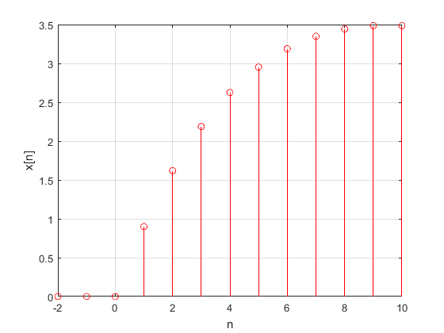
* Problema 3
En cuanto al problema 3 se debe usar la funcion que dio solucion al problema 1 para cumplir con la gráfica de 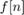
n=-2:20;%vector especificado %se manda a llamar a la funcion previamente hecha la cual grafica funciones en 3d con el % comando stem Mifigurad3(n,real(fun1(1.1,0.5,n)),imag(fun1(1.1,0.5,n))) title('gráfica de f[n] ')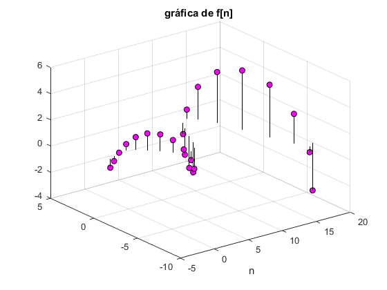
Ahora para mostrar la gráfica de 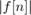 vs n basto con lo siguiente
Mifigurad1(n,abs(fun1(1.1,0.5,n)))
title('gráfica de |f[n]| vs n ')
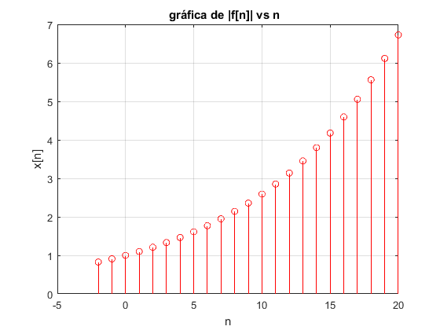 Para mostrar 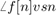 usando el comando atan2
Mifigurad1(n,atan2(imag(fun1(1.1,0.5,n)),real(fun1(1.1,0.5,n))))
title('gráfica de \angle f[n] vs n usando el comando atan2 ')
Para mostrar usando el comando angle
Mifigurad1(n,angle(fun1(1.1,0.5,n)))
title('gráfica de \angle f[n] vs n usando el comando angle ')
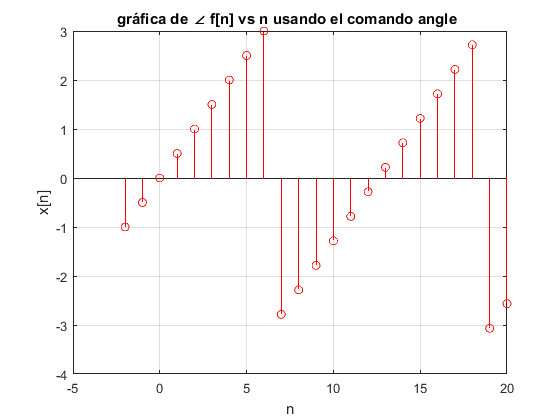 Se puede notar la similitud de las graficas 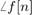 vs 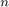 usando ambos comandos
* Problema 4
A continuacion codigo sin ejecutar
function energiadis(t,h) %Los vectores t(tiempo),h(alturas asignadas) pueden ser declarados de la %siguiente manera: energiadis([1,2 etc ],[-1,0.1 etc]). % o definir el vector t=[1 2 3 4], h= [.1 .2 etc] y llamar energiadis(t,h) %Cuidar el orden puesto que dado el vector t ,el vector h debe contener los valores % pertenecientes a los valores de t y=h; e=sum((abs(y)).^2); fprintf('La energia de la señal con los valores dados es: %d',e) Mifigurad1(t,h)
* Problema 5
La solucion del problema 5 , consta de resolver el problema planteado 3.1.1 inciso c, por tanto en base a la grafica mostrada,se procede de la siguiente manera Declaramos primero el vector tiempo
t=-3:3; % Ahora el vector de alturas correspondiente a cada punto h=[-9 -6 -3 0 3 6 9]; % finalmente hacemos llamado a nuestra funcion energiadis energiadis(t,h) title('Grafica del ejercicio 3.1.1 inciso c')
La energia de la señal con los valores dados es: 252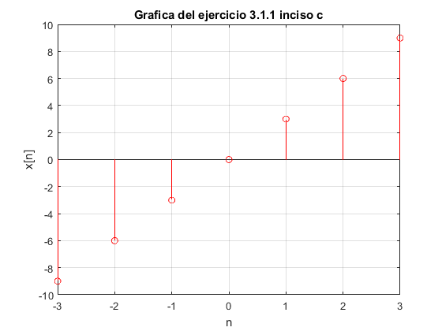
Como se puede notar los valores t y h dependen de la grafica de la señal
* Problema 6
La solucion del problema 6 consta de resolver todos los incisos 3.2.3 basados en la grafica P3.1-1 inciso b, la cual consta de 2 formulas para x=1:3 es h=n y para x=4:5 es h=-x+6 donde h es la altura, a continuacion las graficas(soluciones)
Ej323
Grafica original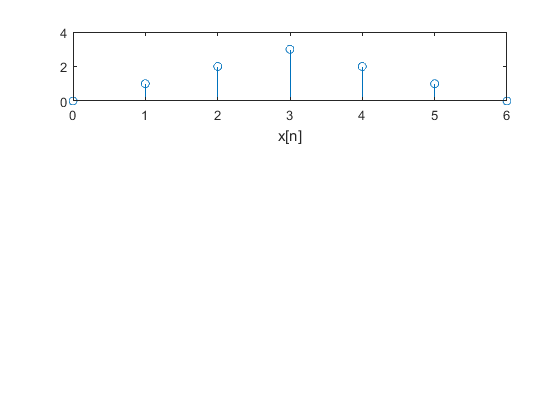
Ej6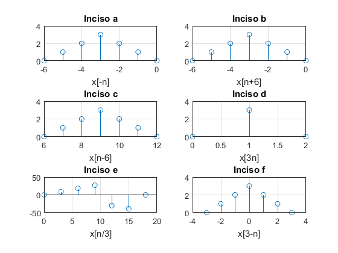
Referencias
Lathi, B. P., (2005). Linear Systems and Signals. EUA: Oxford university Press.